항공기관정비기능사 (2004-10-10 기출문제)
1과목: 비행원리
1. 공기보다 가벼운 항공기에 속하지 않는 것은?
- 자유기구
- 계류기구
- 경식비행선
- 연
(정답률: 57%)

2. 유체의 흐름이 층류에서 난류로 변하는데 관계되는 요소에 속하지 않는 것은?
- 유체의 속도
- 유체의 양
- 유체의 점성
- 물체의 형상
(정답률: 62%)
3. 수평비행을 하던 비행기가 연직 상방향으로 관성력을 받을 때 비행기의 하중배수를 옳게 표현한 식은?
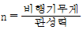
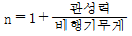
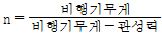
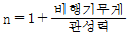
(정답률: 63%)
4. 조종력은 조종사에 의해 조종간이나 페달이 작동되어 조종계통을 통하여 힌지축에 전달된다. 이 때 조종면에서 발생되는 힌지모멘트(HINGE MOMENT)를 식으로 나타내면? (단, H : 힌지모멘트, Ch : 힌지모멘트계수, q : 동압, b : 조종면의 폭,
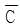
: 조종면의 평균시위(CHORD) 이다.)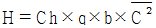
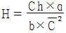
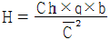
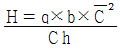
(정답률: 75%)
5. 큰 날개와 꼬리날개에 의한 무게중심 주위의 키놀이 모멘트 관계식은? (단, MC.G : 큰 날개와 꼬리날개에 의한 무게중심 주위의 키놀이 모멘트, MC.G WING : 큰 날개만에 의한 키놀이 모멘트, MC.G TAIL : 수평 꼬리날개에 의한 키놀이 모멘트)
- MC.G = MC.G WING - MC.G TAIL
- MC.G = MC.G WING + MC.G TAIL
- MC.G = MC.G WING × MC.G TAIL
- MC.G = MC.G WING ÷ MC.G TAIL
(정답률: 66%)
6. 대기권은 성분비가 일정한 균질권과 고도에 따라 성분비가 다른 비균질권으로 구성된다. 균질권의 평균고도는 몇 ㎞ 인가?
- 11
- 50
- 80
- 500
(정답률: 43%)
7. 헬리콥터에서 리드-래그 힌지 감쇠기를 설치하는 가장 큰 이유는 무엇인가?
- 회전면 내에 발생하는 진동을 감소시키기 위해
- 뿌리부분에 발생하는 굽힘력을 감소시키기 위해
- 돌풍에 의한 영향을 감소시키기 위해
- 기하학적인 불평형을 감소하기 위해
(정답률: 44%)
8. 음속에 가까운 속도로 비행을 하게되면 속도가 증가될 수록 비행기의 기수가 내려가는 경향이 생겨 조종간을 당겨야 하는 현상이 발생한다. 이 현상을 무엇이라 하는가?
- 더치 롤(dutch roll)
- 내리 흐름(down wash)
- 마하 트림(mach trim)
- 턱 언더(tuck under)
(정답률: 69%)
9. 레이놀즈수 (Reynolds number)에 대한 설명 중에서 가장 거리가 먼 내용은?
- 비행하는 물체에 작용하는 점성력의 특성을 나타낸다
- 속도가 커지면 레이놀즈수도 커진다.
- 레이놀즈수가 증가할수록 흐름은 안정한 상태가 된다
- 천이 현상이 일어나는 레이놀즈수를 임계 레이놀즈수라 한다.
(정답률: 60%)
10. 평균 캠버선(mean camber line)에 대한 설명으로 가장 올바른 것은?
- 날개골 앞부분의 끝
- 날개골 뒷부분의 끝
- 앞전과 뒷전을 연결하는 직선
- 날개 두께의 2등분점을 연결한 선
(정답률: 78%)
11. 쳐든각 이란 무엇인가?
- 날개가 수평을 기준으로 위로 올라간 각
- 날개가 수평을 기준으로 아래로 내려간각
- 기체의 세로축과 날개의 시위선이 이루는각
- 앞전에서 25% C되는점들을 날개뿌리에서 날개끝까지 연결한 직선과 기체의 가로축이 이루는각
(정답률: 67%)
12. 팽창파에 대한 설명으로 가장 거리가 먼 것은?
- 초음속 흐름에서만 생긴다.
- 압력이 감소한다.
- 속도가 감소한다.
- 에너지의 변화는 없다.
(정답률: 21%)
13. 비행기의 종극 속도(terminal velocity)는 다음 중 어느 비행상태에서 나타날 수 있는가?
- 급강하 시
- 수평비행 시
- 이륙 시
- 착륙 시
(정답률: 79%)
14. 비행 중 항공기에 생기는 실속의 종류가 아닌 것은?
- 처음 실속
- 정상 실속
- 부분 실속
- 완전 실속
(정답률: 68%)
15. 다음 중 무게중심 이동 범위가 크고 무거운 물체 운반에 가장 적합한 회전날개 헬리콥터는 어느 것인가?
- 병렬식 회전날개 헬리콥터
- 직렬식 회전날개 헬리콥터
- 동축역회전식 회전날개 헬리콥터
- 단일 회전날개 헬리콥터
(정답률: 48%)
16. 항공기 정비에서 오버 홀과 가장 관계가 먼 것은?
- 시한성 정비
- 신뢰성 정비
- 장비의 오버 홀도 있다.
- 사용시간이 0 으로 환원
(정답률: 70%)
17. 정비의 분류에 속하지 않는 것은?
- 조절
- 수리
- 개조
- 보수
(정답률: 59%)
18. 항공기 정비시 사용되는 정비기술도서 중 부품기술정보에 이용되는 도서는?
- 기체 수리교범(STRUCTURE REPAIR MANUAL)
- 검사 지침서(INSPECTION GUIDE)
- 정비 교범(MAINTENANCE MANUAL)
- 도해부품 목록(ILLUSTRATED PARTS CATALOG)
(정답률: 54%)
19. 버니어 캘리퍼스에 관한 설명 내용으로 가장 관계가 먼 것은?
- 일반적으로 용도에 따라 M1, M2, CB, CM등 4종류가 있다.
- 호칭치수는 미터식인 경우 일반적으로 150, 200, 300, 600, 1000㎜의 크기로 구분한다.
- 일반적으로 아들자는 프레임의 한쪽 끝에 눈금이 표시되어 있다.
- 측정물의 안지름, 바깥지름, 깊이등을 측정할 수 있다.
(정답률: 28%)
20. 다음의 내용 중 잘못된 것은?
- Tap은 암나사를 내는데 사용한다.
- 숫나사를 가공하는 공구는 Dies다.
- Tap은 직경 및 나사 계열에 따라 3개가 1조로 구성된다.
- 드릴작업후 구멍안쪽의 가공면을 다듬질 하는 공구는 Dimpling Dies다.
(정답률: 55%)
2과목: 항공기정비
21. 구멍의 안지름이나 홈의 너비 등을 측정할 때 사용하는 측정 보조장비는?
- Telescoping Gage
- Thickness Gage
- Feeler Gage
- Pitch Gage
(정답률: 41%)
22. 항공기 계통과 배관 색표시가 올바르게 연결된 것은?
- 연료계통 : 푸른색(blue)
- 산소계통 : 초록색(green)
- 유압계통 : 노란색(yellow)
- 윤활계통 : 푸른색-노란색(blue-yellow)
(정답률: 62%)
23. 코터핀의 장착 및 떼어낼 때의 주의사항 중 틀린 내용은?
- 한번 사용된 것은 재사용해서는 안된다.
- 핀끝을 절단할 때는 핀축에 직각으로 절단 해야한다.
- 핀끝을 접어 구부릴 때는 펼쳐지게 해야한다.
- 핀끝을 너트의 벽에 꼭 붙이기 위해 스틸햄머를 사용해야 한다.
(정답률: 57%)
24. 두께 0.1㎝의 판을 굽힘 반지름 25cm 로서 90° 로 굽히려고 한다. 이때 세트 백(Set back)은 얼마인가?
- 25.1㎝
- 24.9㎝
- 20.1㎝
- 19.95㎝
(정답률: 77%)
25. 항공기용 AN볼트(BOLT)의 규격표시에서 AN 12-17에서 12 숫자는 무엇을 나타내는 것인가?
- 볼트(BOLT)의 길이가 3/4인치 (INCH)
- 볼트(BOLT)의 나사산(THREAD)이 12개
- 볼트(BOLT)의 지름(DIA)이 3/4인치(INCH)
- 볼트(BOLT)의 그리프(GRIP)의 길이
(정답률: 51%)
26. 항공기의 동계취급 중 얼지 않게 하기 위하여 사용되는 부동액은 어느 것인가?
- 알코올(ALCOHOL)
- 글리콜(GLYCOL)
- 에틸렌(ETHYLENE)
- 가솔린(GASOLINE)
(정답률: 35%)
27. 전기적인 화재는 어느 것인가?
- A급 화재
- B급 화재
- C급 화재
- D급 화재
(정답률: 79%)
28. 항공기의 표준 유도신호 중 그림과 같은 신호는 무엇을 뜻하는가?
- 전진
- 정지
- 촉굄
- 촉제거
(정답률: 69%)
29. 항공기나 그 부품의 세척작업에 대하여 설명한 내용으로 틀린 것은?
- 세척할 때 이유없이 항공기에 올라가서는 안된다.
- 세척작업을 하는 동안 환기가 잘 되도록 한다.
- 화기와 높은 열을 발생하는 작업을 하지 않도록 한다
- 세척유는 항공유를 필히 사용한다.
(정답률: 74%)
30. 작업중에 반드시 접지를 하지 않아도 되는 것은?
- 연료의 급유 작업
- 연료의 배유 작업
- 항공기 정비 작업
- 항공기 시운전
(정답률: 85%)
31. 영문중 밑줄친 부분의 내용으로 가장 올바른 것은?
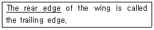
- 앞부분
- 뒷부분
- 옆부분
- 동체부분
(정답률: 58%)
32. 다음 ( )안에 알맞는 말은?
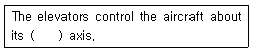
- lateral
- longitudinal
- vertical
- horizontal
(정답률: 50%)
33. 자력선을 이용하여 재료표면이나 표면밑의 균열을 발견하는 검사방법은?
- 자분탐상 검사
- 형광 침투 탐상검사
- 초음파 검사
- 와전류 검사
(정답률: 75%)
34. 전자장비와 탐침으로 항공기의 중요 패스너 홀내부의 균열 등을 검사하는데 사용되는 비파괴 검사법은?
- 자분탐상 검사
- 형광침투 검사
- 초음파 검사
- 와전류 검사
(정답률: 55%)
35. 리벳의 작업내용 중 가장 관계가 먼 것은?
- 리벳의 지름은 접합할 판재 중에서 두꺼운 판재의 2배가 적당하다.
- 리벳 머리를 성형하기 위해 리벳이 판재위로 돌출되는 길이는 리벳 지름의 1.5배이다.
- 성형된 리벳 머리의 지름이 리벳 지름의 1.5배가 되어야한다.
- 성형된 리벳 머리의 두께는 리벳 지름의 0.5배가 되어야한다.
(정답률: 60%)
36. 표준상태(T=273.15 °K, P=1.0332×104 Kgf/m2 ) 에서의 공기의 비체적
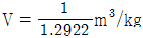
이라면 공기의 기체상수 R은 얼마인가?- 27.29
- 28.29
- 29.27
- 32.21
(정답률: 43%)
37. 왕복기관 연료계통의 플로우트식 기화기의 특징을 가장 올바르게 설명한 것은?
- 분출되는 연료의 기화열에 의한 온도강하에 의하여 기화기가 결빙되기 쉽다.
- 비행자세의 영향을 받지 않는다.
- 구조가 복잡하고 무게가 무겁다.
- 대형 항공기나 곡예용 항공기에 적합하다.
(정답률: 31%)
38. 프로펠러에 조속기를 장치하여 비행고도, 비행속도, 드로틀 개폐에 관계 없이 조종사가 선택한 RPM을 항상 일정으로 유지시켜 당해 조건에 대해 항상 최량의 효율을 가질 수 있도록 만든 프로펠러 형식은?
- 정속프로펠러(Constant speed propeller)
- 조정피치 프로펠러(Adjustable pitch propeller)
- 페더링 프로펠러(Feathering propeller)
- 고정피치 프로펠러(Fixed pitch propeller)
(정답률: 64%)
39. 가스 터빈기관에 사용되는 원심식 압축기의 주요 구성품이 아닌 것은?
- 디퓨져
- 임펠러(impeller)
- 매니폴드
- 회전자(rotor)
(정답률: 68%)
40. 항공용 가스터빈 기관의 터빈 깃 냉각방법 중에서 터빈 깃의 내부를 중공으로 제작하여 이곳으로 차가운 공기가 지나가게 함으로써 터빈 깃을 냉각시키는 방식은?
- 충돌 냉각
- 공기막 냉각
- 침출 냉각
- 대류 냉각
(정답률: 70%)
3과목: 항공기관
41. 연소실 유입공기에 강한 선회를 주어 공기에 적당한 와류를 발생시켜 압축공기의 연소실로 유입되는 속도를 감소시키며 화염전파속도를 증가시켜 주는 것은?
- 연소기 도움
- 스웰가이드베인
- 내부 라이너
- 연소기 버너
(정답률: 60%)
42. 추력 비연료 소비율(TSFC)의 단위로 올바른 것은?
- ㎏/h
- ㎏/㎏-h
- ㎏/sec
- ㎏-㎏/sec
(정답률: 57%)
43. 터보 제트기관의 추진효율이 80%, 열효율이 50%일 때 이 기관의 전효율은 몇 % 인가?
- 20 %
- 30%
- 40%
- 50%
(정답률: 40%)
44. 결핍 시동인 헝스타트(HUNG START)에 대한 내용으로 가장 옳은 것은?
- 시동시 EGT가 규정치 이상 상승한다.
- IDLE RPM 이상 증가하지 않는다.
- 배기가스의 온도가 계속 낮아진다.
- 오일 압력이 늦게 상승한다.
(정답률: 65%)
45. 가스터빈 항공기 연료의 구비조건으로 가장 올바른 것은?
- 무게당 발열량이 적어야한다.
- 어는 점이 높아야한다.
- 증기압이 낮아야 한다.
- 인화점이 낮아야한다.
(정답률: 58%)
46. 일정시간 작동된 기관에서 윤활유를 채취하여 윤활유에 함유되어 있는 금속성분을 분석하여 내부 부분품의 마모, 손상 여부를 판독하는 방법은?
- 휠터링(FILTERING)
- 분광 시험
- 솔더링(SOLDERING)
- 와전류 검사
(정답률: 57%)
47. 0-470-11왕복기관에서 "0"는 무엇을 의미하는가?
- 기관의 실린더 배열형식
- 연료계통에서 기화기의 형식
- 실린더의 모양
- 점화계통의 형식
(정답률: 63%)
48. 가스터빈 기관으로 흡입되는 단위공기 유량에 대한 진추력은?
- 총추력
- 부분추력
- 비추력
- 단위추력
(정답률: 40%)
49. 반동터빈에 대한 설명으로 틀린 것은?
- 고정자 깃의 통로는 수축통로이다.
- 회전자 깃의 통로는 단면적이 일정하다.
- 반동도는 일반적으로 50% 정도이다.
- 회전자 깃의 통로는 수축통로이다.
(정답률: 39%)
50. 가스터빈 기관의 용도를 적은 것이다. 서로 연결이 잘못된 것은?
- 터보제트 - 전투기
- 터보팬 - 수송기
- 터보프롭 - 고속기
- 터보샤프트 - 헬리콥터
(정답률: 74%)
51. 터보제트 기관의 역추력장치(Thrust Reverser)는 어떤 방법으로 이륙거리를 단축하는가?
- 역플랩(Reverser Flap)을 핀다.
- 배기가스의 흐름을 거꾸로 한다.
- 배기가스의 속도를 감소시킨다.
- 연소가스의 흐름을 거꾸로 한다.
(정답률: 68%)
52. 순항 마력에 대한 설명으로 가장 거리가 먼 것은?
- 경제 마력과 같다
- 항공기가 순항 비행을 할 때에 사용하는 마력
- 연료 소비율이 가장 적은 상태에서 얻어지는 동력을 말한다
- 항공기 기관이 낼 수 있는 연속 최대 마력을 말한다
(정답률: 60%)
53. 다음 그림은 폴리트로픽 변화이다. A 에 해당되는 상태 변화는 무엇인가?
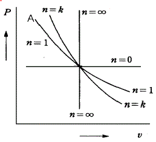
- 정압과정
- 단열과정
- 등온과정
- 정적과정
(정답률: 46%)
54. 식
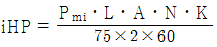
에서 Pmi는 무엇을 뜻하는가?- 평균지시마력, 단위로는 Kgㆍm/s로 표시 한다.
- 평균지시마력, 단위로는 Kgiㆍm/s로 표시 한다.
- 지시평균유효압력, 단위로는 Kgf/cm2 으로 표시한다.
- 지시평균유효압력, 단위로는 Kg/mㆍs2 으로 표시한다
(정답률: 60%)
55. 왕복 기관에서 노킹(Knocking)이 일어나는 원인과 관계없는 것은?
- 혼합 가스 온도가 너무 낮을 때
- 혼합 가스 온도가 너무 높을 때
- 혼합 가스의 화염 전파 속도가 느릴 때
- 부적당한 연료를 사용했을 때
(정답률: 43%)
56. 항공기에 장착한 왕복기관이 고도의 변화에 따라 벨로우스(bellows)의 수축과 팽창으로 혼합비가 자동으로 조정되는 장치를 무엇이라 하는가?
- 이코너마이저 혼합비 조정 장치
- 가속 혼합비 조정 장치
- 초크 혼합비 조정 장치
- 자동 혼합비 조정 장치
(정답률: 82%)
57. 옥탄값(O.N.)과 퍼포먼스수(P.N.)의 관계식으로 가장 올바른 것은?
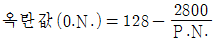
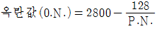
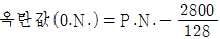
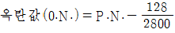
(정답률: 31%)
58. 피스톤의 지름이 14.5cm인 피스톤에 48 Kgf/cm2의 가스압력이 작용하면 피스톤에 미치는 힘은 얼마인가?
- 8922(Kgf)
- 7922(Kgf)
- 6922(Kgf)
- 5922(Kgf)
(정답률: 38%)
59. 정비하기가 가장 쉬운 가스터빈 기관의 연소실은?
- CAN TYPE
- ANNULAR TYPE
- CAN-ANNULAR TYPE
- REVERSER ANNULAR TYPE
(정답률: 69%)
60. 터보 제트기관에 사용되는 오일펌프의 형식(TYPE)은?
- 베인 형, 기어형, 지로터형
- 베인 형, 기어형, 펌프형
- 기어형, 지로터형, 펌프형
- 베인 형, 펌프형, 지로터형
(정답률: 43%)